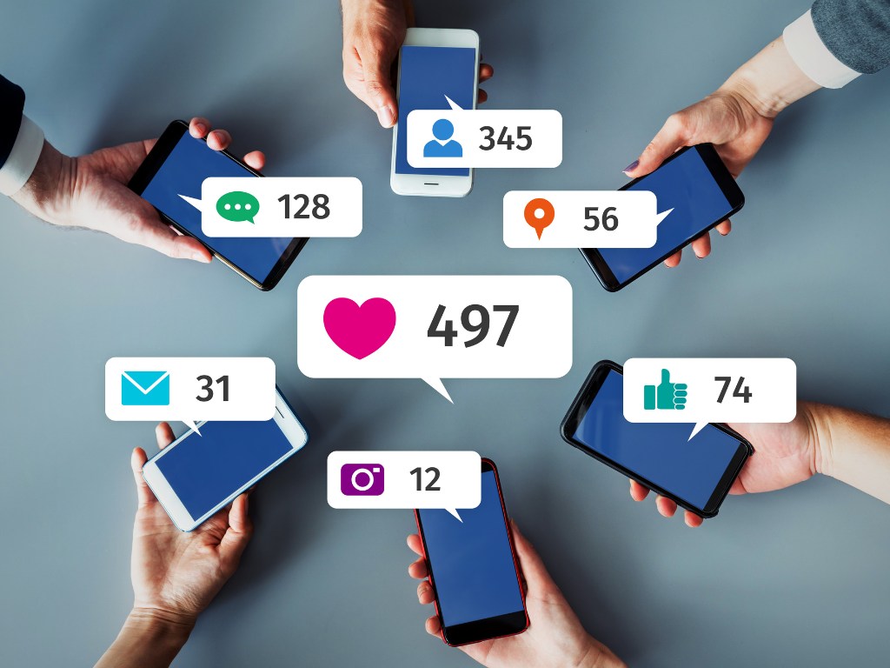

En la última década, las redes sociales se han convertido en una parte integral de nuestras vidas, proporcionando conexiones, información y entretenimiento en abundancia. Sin embargo, a medida que aumenta nuestra dependencia de estas plataformas, también surge la preocupación por su impacto en nuestra salud mental. En este artículo, exploraremos cómo las redes sociales pueden afectar nuestra salud mental y cómo podemos utilizarlas de manera más consciente para preservar nuestro bienestar emocional.
Conexión y Aislamiento Social
Una de las promesas más significativas de las redes sociales es su capacidad para conectar a las personas en todo el mundo. Estas plataformas nos permiten mantenernos en contacto con amigos y familiares, incluso si están lejos. Sin embargo, a medida que las conexiones en línea aumentan, algunos estudios sugieren que también puede surgir una sensación de aislamiento social.
El uso excesivo de las redes sociales puede llevar a una comparación constante con otros, lo que puede generar sentimientos de inadecuación y soledad. Las imágenes cuidadosamente seleccionadas y las actualizaciones positivas pueden crear una percepción distorsionada de la vida de los demás, lo que lleva a una disminución de la autoestima y una sensación de desconexión del mundo real.
Efectos en la Autoestima y la Imagen Corporal
Las redes sociales también pueden influir en nuestra percepción de la imagen corporal y la autoestima. La prevalencia de imágenes corporales idealizadas y filtros de belleza puede generar una presión social para cumplir con estándares poco realistas. Muchas personas comparan sus cuerpos y vidas con las representaciones retocadas que ven en línea, lo que puede generar sentimientos de insatisfacción con su apariencia y autoconcepto.
Esta preocupación por la imagen corporal puede afectar particularmente a los adolescentes y jóvenes adultos, ya que están en una etapa de desarrollo crucial y son más susceptibles a la influencia de las redes sociales en la conformidad social.
Adicción y Dependencia
Las redes sociales están diseñadas para mantenernos comprometidos y entretenidos durante largos períodos de tiempo. Esta dinámica de gratificación instantánea y notificaciones constantes puede llevar a una adicción a las redes sociales. La dependencia de estas plataformas puede afectar negativamente nuestra concentración, productividad y, en última instancia, nuestra salud mental.
Además, el uso excesivo de las redes sociales puede interferir con el sueño, ya que muchas personas tienden a revisar sus dispositivos antes de acostarse. La falta de sueño adecuado está vinculada a problemas de salud mental, como la ansiedad y la depresión.
Cyberacoso y Exposición a Contenidos Perturbadores
Otro aspecto preocupante del impacto de las redes sociales en la salud mental es el cyberacoso. El anonimato que brindan estas plataformas puede llevar a comentarios crueles, acoso y difamación en línea, lo que puede tener consecuencias devastadoras para la salud mental de las víctimas.
Además, la exposición constante a contenido perturbador o traumático, como noticias negativas o imágenes violentas, puede aumentar la ansiedad y el estrés en los usuarios.
Uso Consciente y Saludable de las Redes Sociales
A pesar de los desafíos que plantean las redes sociales, no es necesario renunciar a ellas por completo. En cambio, podemos adoptar un enfoque más consciente y saludable en su uso:
- Establecer límites de tiempo: Fija límites para el tiempo que pasas en las redes sociales cada día y considera desactivar las notificaciones para evitar distracciones constantes.
- Seleccionar cuidadosamente las conexiones: Elimina o "silencia" a personas o cuentas que puedan tener un impacto negativo en tu bienestar emocional.
- Promover la positividad: Comparte y sigue contenido que promueva la positividad, la inspiración y el bienestar emocional.
- Construir conexiones en la vida real: No olvides la importancia de las conexiones cara a cara. Intenta pasar tiempo con amigos y familiares fuera del entorno digital.
- Buscar ayuda profesional: Si sientes que las redes sociales están afectando significativamente tu salud mental, no dudes en buscar apoyo de un profesional de la salud mental.
Las redes sociales pueden tener tanto efectos positivos como negativos en nuestra salud mental. La clave está en utilizarlas de manera consciente y equilibrada, manteniendo la perspectiva y protegiendo nuestra salud emocional. Al adoptar prácticas más saludables en el uso de las redes sociales, podemos aprovechar sus beneficios mientras protegemos nuestro bienestar mental en un mundo digital cada vez más conectado.